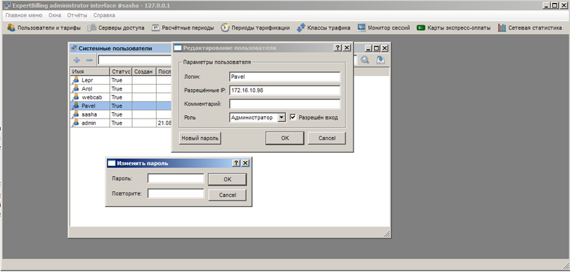

|
Интерфейс и логика |
Top Previous Next |
|
Открыть раздел «Администраторы» можно только через меню «Главное меню» → «Администраторы»;
Главное окно составляют две кнопки «+» (добавить пользователя) и «–» (удалить пользователя), блок быстрого поиска учетной записи по части названия и таблица существующих учетных записей.

Для каждой записи в таблице приводится её название («Имя»), «Статус» («True» – доступ открыт, «False» – доступ закрыт), дата и время создания записи («Создан»), а также дата, время и IP-адрес последней авторизации в системе («Последний вход», «Последний IP») В поле «Разрешенные адреса» приводится диапазон IP-адресов, с которых администратор сможет подключиться к системе. Значение по умолчанию «0.0.0.0/0» сообщает, что администратор будет авторизован с любого IP.
В контекстном меню пользователю предлагается изменить параметры выбранной учетной записи («Настройки»), добавить новую учетную запись («Добавить») либо удалить её («Удалить»)
При выборе «Настройка» из контекстного меню, двойном щелчке по существующей записи в таблице либо добавлении новой учетной записи, открывается окно «Редактирование пользователя». В этом окне задается имя учетной записи («Логин»), диапазон разрешенных IP-адресов для подключения («Разрешённые IP»), опциональную дополнительную информацию об учетной записи («Комментарий»), роль пользователя(администратор/кассир/веб-кабинет), пароль («Новый пароль») и статус вновь созданного аккаунта (флажок «Разрешён вход» установлен – авторизация разрешена, флажок «Разрешён вход» снят – авторизация запрещена). This help file was created with an unregistered evaluation copy of Help & Manual. © EC Software. All rights reserved. This message will not appear if you compile this help file with the registered version of Help & Manual. |